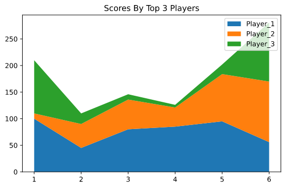
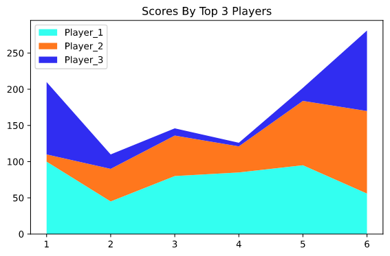

A Stack Plot is a plot that shows the whole data set with easy visualization of how each part makes up the whole.
Each constituent of the stack plot is stacked on top of each other. It shows the part makeup of the unit,as well as the whole unit.
Importing the libraries
# importsfrom matplotlib import pyplot as plt import numpy as np
Getting the data ready
# getting the data ready # cricket matches
matches = np.array([1,2,3,4,5,6])
# scores by top 3 players of a both sides
player_1 = np.array([100,45,80,85,95,56])
player_2 = np.array([10,45,56,36,89,114])
player_3 = np.array([100,20,10,5,18,111])
Plotting the data to a stackplot
# plotting the data to a stackplot
plt.stackplot(matches,player_1,player_2,player_3)# the stackplot() method is used to plot a stackplot
plt.title("Scores By Top 3 Players")
plt.tight_layout()
plt.show()
This is our first copy of the stack plot that we will be plotting:
plt.stackplot(matches,player_1,player_2,player_3,labels=labels)# the labels argument is responsible to give labels to the plot
plt.title("Scores By Top 3 Players")
plt.tight_layout()
plt.legend()# the legend() method adds the labels to the legend and displays it
plt.show()
This gives us a plot with labels:

A Stack Plot With Proper Labels
What we get here is a plot with labels wrongly placed.So,we'll be fixing that.
Changing the location of the legend and adding colors of choice
# changing the location of the legend and adding colors of choice # colors
colors = np.array(["#33fff0","#ff771d","#302df1"])# the colors array
plt.stackplot(matches,player_1,player_2,player_3,labels=labels,colors=colors) # passing the colors argument a set of colors sets the colors for the plot
plt.title("Scores By Top 3 Players")
plt.tight_layout()
plt.legend(loc="upper left")# passing the loc either a tuple or a string sets the location of the legend # "upper left" places the legend on the upper left corner of the plot
plt.show()
Here's our final plot,the one with perfectly placed legend and colors of our choice:

Final Plot
Extras ;););)
We can plot a stack plot by passing a single multi-dimension array instead of passing arrays separately. It's like each dimension of the array will be treated as an individual array argument.
# redefining the data as a multi-dimensional array
players= np.array([[100,45,80,85,95,56],[10,45,56,36,89,114],[100,20,10,5,18,111]])
# plotting
plt.stackplot(matches,players,labels=labels,colors=colors) # passing the multi-dimensional array
plt.title("Scores By Top 3 Players")
plt.tight_layout()
plt.legend(loc="upper left")
plt.show()
This gives us the same plot as our final plot:
What shall I caption this,when i already captioned the previous one as "Final Plot" ?
That's it...See you in the next tutorial...until then a H3avren style Ta-Da...